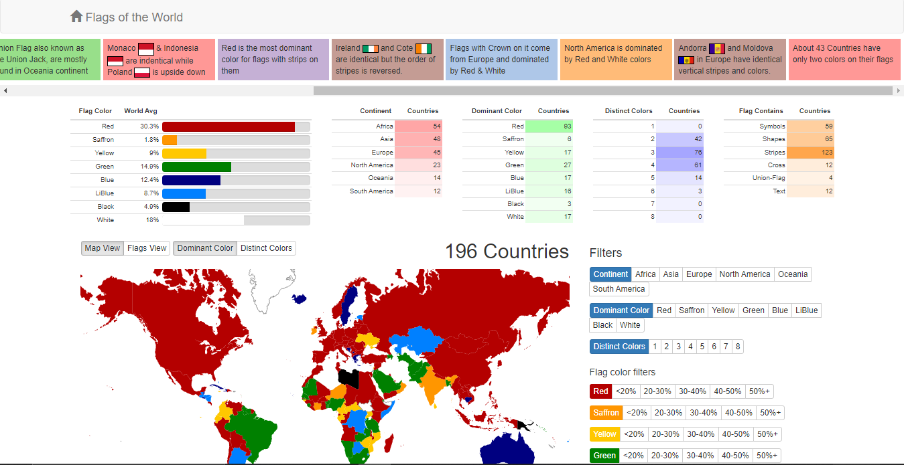

Links & Resources
| site & description | img |
|---|---|
| https://www.fotw.info/ "Flags of the World (FOTW), founded in 1994, is the Internet’s largest site devoted to vexillology (the study of flags). Here you can read more than 82,000 pages about flags and view more than 180,000 images of flags of countries, organizations, states, territories, districts and cities, both past and present." holy shit. this website is amazing. |
|
| https://en.wikipedia.org/wiki/List_of_flags_by_design "This is a list of flags, arranged by design, serving as a navigational aid for identifying a given flag." |
|
| https://en.wikipedia.org/wiki/Glossary_of_vexillology "Flag terminology is the nomenclature, or system of terms, used in vexillology, the study of flags, to describe precisely the parts, patterns, and other attributes of flags and their display." |
|
| https://gramener.com/flags/ stats on flags |
 |
| https://www.flaginstitute.org/wp/ Flying high since 1971, the Flag Institute is the authority on flags and flag flying (vexillology). It fosters study and understanding. It promotes flag design and flag use. And it offers a unique free source of expert advice, information and comment. Membership is open to all. JOIN TODAY! |